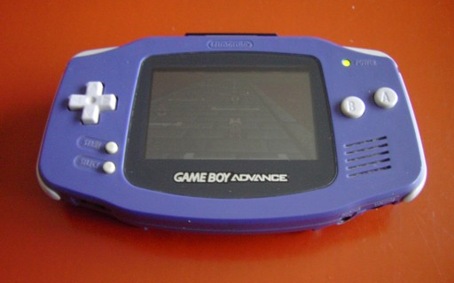
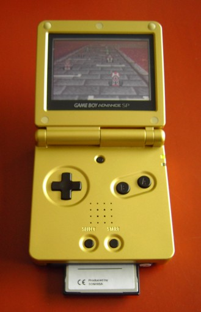

1. GBA 硬件
初识 GBA
任天堂 Game Boy Advance（GBA 掌机）是一台便携式游戏主机。这你肯定早就知道了。它的 CPU 是一颗运行在 16.78 MHz 的 32 位 ARM7tdmi 芯片。它拥有若干不同的内存区域（例如工作 RAM、IO 和显存），我们稍后会逐一了解。游戏存储在 Game Pak 卡带上，由存放代码和数据的 ROM，以及相当常见的、用于保存游戏信息的 RAM 组成。GBA 拥有一块 240x160 的 LCD 屏幕，能够显示 32768 种颜色（15 位）。
遗憾的是，这块屏幕没有背光，这让很多人非常恼火，也被普遍认为是一个糟糕的决定。于是，在 2003 年，任天堂推出了 GBA SP，可以看作 GBA 2.0，它采用了一块可折叠的屏幕，让人想起老式的 Game & Watch 游戏（还记得吗？你记得？天哪，你真是老了！（值得一提的是，我也还留着我的那台 :) ））。随后迎来了最后的 GBA 版本——Game Boy Micro，一台非常小巧的 GBA，能轻松放进口袋。不过，GBA、GBA-SP 和 Micro 之间的差别主要是外观上的，从编程的角度来看，它们其实是同一个东西。
初代 Game Boy 在 1989 年风靡全球。对于一台单色掌机来说，这已经相当了不起了，不是吗？后来推出的 Game Boy Color 终于给这台老机器添上了一些色彩，但它本质上仍然是一台简单的 Game Boy。真正的继承者是 2001 年发布的 GBA。GBA 向后兼容 Game Boy，所以你也能玩所有老 GB 游戏。
在能力上，GBA 很像超级任天堂（SNES）：15 位色彩、多层背景，以及硬件旋转和缩放。当然，还有肩键。一个爱挑剔的人或许会看着那海量的 SNES 移植作品说，GBA 就是一台 SNES，只不过便携而已。这话没错，但你很难说这是件坏事。
|
 Fig 1.1: 初代 GBA。 |
 Fig 1.2: GBA-SP。 |
GBA 规格与能力
下面是 GBA 的规格与能力列表。这并非完整列表，但列出了你最需要了解的最重要部分。
- 视频
- 声音
- 总计 6 个声道
- 来自初代 Game Boy 的 4 个音调发生器：2 个方波、1 个通用波形和 1 个噪声发生器。
- 2 个“DirectSound“声道，用于播放采样和音乐。
- 其他
- 10 个按键（或称按键）：4 方向十字键、Select/Start、A/B 发射键、L/R 肩键。
- 14 个硬件中断。
- 通过 multiboot 线实现的 4 人多人模式。
- 可选的红外、太阳能和陀螺仪接口。也有其他人制作的其他接口。
- 主要编程平台：C/C++ 和汇编，不过也有适用于 Pascal、Forth、Lua 等的工具。易于上手，但要真正精通却很难。
从编程的角度看，GBA（或者说任何主机）与 PC 完全不同。没有操作系统，不用操心驱动和硬件兼容性问题；目光所及之处全是比特。嗯，PC 本质上也只是一堆比特，但那是在好几层抽象之下；而在主机上，只有你、CPU 和内存。基本上，这就是真正的程序员的梦想。
要想做任何事，你需要用到内存映射 IO。特定的内存区域被直接映射到硬件功能上。例如，在第一个演示程序中，我们会把数字 0x0403 写到内存地址 0400:0000h。这告诉 GBA 启用背景 2，并将图形模式设为 3。而这到底意味着什么，当然正是本教程要讲的内容 :)。
CPU
如前所述，GBA 运行在一颗频率为 16.78 MHz（224 周期/秒）的 ARM7tdmi RISC 芯片上。它是一颗 32 位芯片，可以运行两套不同的指令集。首先是 ARM 代码，它是一套 32 位指令。其次是 Thumb，使用 16 位指令。Thumb 指令是 ARM 指令集的一个子集；由于指令更短，代码体积可以更小，但其能力也相应减弱。建议常规代码使用 ROM 中的 Thumb 代码，而对时间关键的代码则使用 ARM 代码并放在 IWRAM 中。由于所有 tonc 演示程序仍然相当简单，大多数（但并非全部）代码都是 Thumb 代码。
关于 CPU 的更多信息，请访问 www.arm.com 或查看汇编章。
内存分区
本节列出了各个内存区域。它基本上是 GBATEK 内存章节的摘要。
| 区域 | 起始 | 结束 | 长度 | 端口位宽 | 描述 |
|---|---|---|---|---|---|
| System ROM | 0000:0000 |
0000:03FF |
16 KB | 32 bit | BIOS 内存。你可以执行它，但不能读取它（换言之，可以摸，别看）。 |
| EWRAM | 0200:0000h |
0203:FFFFh |
256 KB | 16 bit | 外部工作 RAM。可供你的代码和数据使用。如果你在使用 multiboot 线，下载下来的代码会放在这里并从这里开始执行（正常情况下执行从 ROM 开始）。由于是 16 位端口，你希望这一区域的代码是 Thumb 代码。 |
| IWRAM | 0300:0000h |
0300:7FFFh |
32 KB | 32 bit | 同样可供代码和数据使用。32 位总线以及它内嵌于 CPU 的事实，使这成为最快的内存区域。32 位总线意味着 ARM 指令可以一次载入，所以把你的 ARM 代码放在这里。 |
| IO RAM | 0400:0000h |
0400:03FFh |
1 KB | 32 bit | 内存映射 IO 寄存器。它们与你在汇编中使用的 CPU 寄存器毫无关系，所以这个名字可能有点令人困惑。这可别怪我。你正是在这个区域控制图形、声音、按键和其他功能。 |
| PAL RAM | 0500:0000h |
0500:03FFh |
1 KB | 16 bit | 存放两个调色板的内存，每个含 256 个 15 位颜色项。第一个用于背景，第二个用于精灵。 |
| VRAM | 0600:0000h |
0601:7FFFh |
96 KB | 16 bit | 显存（Video RAM）。这里存放用于背景和精灵的数据。对这些数据的解读取决于若干因素，包括视频模式，以及背景和精灵的设置。 |
| OAM | 0700:0000h |
0700:03FFh |
1 KB | 32 bit | 对象属性内存（Object Attribute Memory）。你在这里控制精灵。 |
| PAK ROM | 0800:0000h |
var | var | 16 bit | Game Pak ROM。游戏就位于这里，执行也从这里开始，除非你正通过 multiboot 线运行。它的大小可变，但上限是 32 MB。它是 16 位总线，所以这里 Thumb 代码优于 ARM 代码。 |
| Cart RAM | 0E00:0000h |
var | var | 8 bit | 这里存放存档数据。Cart RAM 可以是 SRAM、Flash ROM 或 EEPROM 的形式。从编程角度看，它们都做同一件事：存储数据。总大小可变，但 64 KB 是个不错的参考值。 |
各个 RAM 区域（Cart RAM 除外）都会在 BIOS 启动时清零。你最经常打交道的区域是 IO、PAL、VRAM 和 OAM。对于简单的游戏和演示程序，通常只需在开始时把图形数据载入 PAL 和 VRAM，并用 IO 和 OAM 来处理实际的交互就足够了。这两个区域（IO 和 OAM）的布局相当复杂，几乎不可能独自琢磨出来（说“几乎“，是因为模拟器作者显然已经做到了）。考虑到这一点，像 GBATEK 和 CowBite Spec 这样的参考文档是不可或缺的。理论上，这些就是你上手所需的全部，但在实践中，使用一个或多个带有示例代码教程（比如本教程）会省去很多头疼的事。